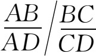
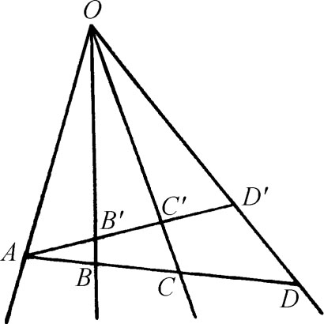
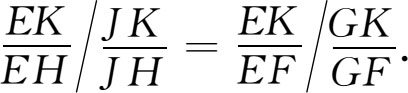
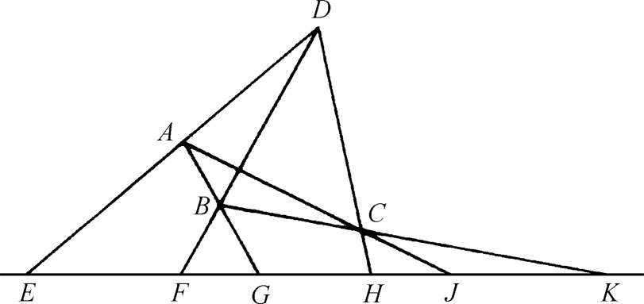
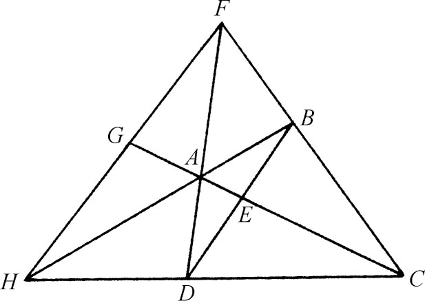
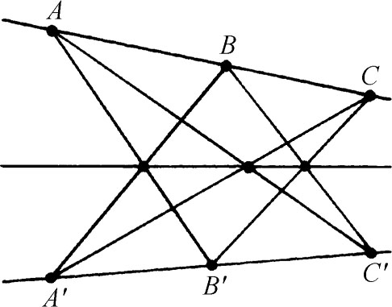

7．亚历山大后期的几何工作
大约从公元1世纪初起，亚历山大的数学工作特别是几何工作开始衰落。我们将在第8章里探讨这衰落的原因。我们所知道的关于公元1世纪初的几何工作是由一些较大的评注家——帕普斯、亚历山大的泰奥恩（公元4世纪末）和普罗克洛斯传下来的。
总的说来，这时期内很少发现新的定理。当时的几何学者似乎忙于研究和阐释前代大数学家的著作。他们增补前人著作里的一些证明，这些证明或是因为原作者认为太容易可由读者自证，或是因为在其他失传的论文里证过而付阙如。附带说明，按照当时的老说法，这些证明都称作引理。
泰奥恩和帕普斯两人都提到芝诺多罗斯（Zenodorus）的工作。此人生活在公元前200年到公元100年之间。据说他写过一本关于等周形（具有相等周边的一些图形）的书，其中证明了以下的定理：
1．周长相等的n边形中，正n边形的面积最大。
2．周长相等的正多边形中，边数愈多的正多边形面积愈大。
3．圆的面积比同样周长的正多边形的面积大。
4．表面积相等的所有立体中，以球的体积为最大。
这些定理的主题就是今天所谓的极大极小问题，它在希腊数学里是新颖的。
在亚历山大晚期出现的帕普斯对几何学的工作是高潮后的一种低潮。他那含八篇的《数学汇编》（Mathematical Collection）中有些新的材料。帕普斯的新著作水平不是最高，但有些内容值得指出。
书的第五篇里给出芝诺多罗斯关于等周曲边形问题的证明、结果和推广。帕普斯增添了一个定理：周长相等的所有弓形中以半圆的面积为最大。他又证明球的体积比表面积与其相等的任何圆锥、圆柱或正多面体都大。
第七篇的命题129是下述定理的特例：设有四线交于一点O（图5.20），则对任何与此四线相交的横跨线来说，交比

都相等。帕普斯则要求所有的横跨线都通过A。

图5.20
命题130所叙述的结论用我们的话来说就是：若一完全四边形的六边（四边及两对角线）与一直线相交的点有五点固定，则第六点也固定。例如，若ABCD（图5.21）是这四边形，它的六边与任一直线EK相交的六点是E，F，G，H，J和K。如果其中五点固定，则第六点也固定。帕普斯指出这六点满足条件

这条件说由E，K，J，H所定的交比等于由E，K，G，F所定的交比。这条件等价于以后将要讲的德萨格（Girard Desargues）所引入的条件，他把这样的六个点叫做“对合点”。

图5.21
第七篇的命题131相当于这样一个定理，即在每个四边形中，一根对角线被另一对角线以及被其两组对边交点的连线分割成调和比。例如，若ABCD是一四边形（图5.22）；CA是一对角线；CA被另一对角线BD并被FH（AD与BC交点及AB与CD交点的连线）所割。则图中的C，E，A，G形成一组调和点；就是说，E内分AC之比等于G外分AC之比。

图5.22
第七篇的命题139给出今日仍以帕普斯命名的定理。若A，B，C（图5.23）是一直线上三点，而A′，B′，C′是另一直线上三点，则AB′与A′B，BC′与B′C以及AC′与A′C相交的三点共线。

图5.23
最后一批引理中的命题238证明了所有圆锥曲线的一个基本性质：与定点（焦点）及定直线（准线）的距离成一定比例的一切点的轨迹是一圆锥曲线。圆锥曲线的这一基本性质并未载入阿波罗尼斯的《圆锥曲线》一书，但上章已指出，欧几里得可能是知道这一性质的。
帕普斯在第七篇的前言里重复了阿波罗尼斯的断言，即用他的方法可以求出这样一个动点的轨迹：它与两定直线距离的乘积等于它与其他两定直线距离的乘积乘以一个常数。帕普斯知道但未证明这个轨迹是一圆锥曲线。他还指出这一问题可推广到包含五根、六根或更多根的直线。我们在讨论笛卡儿（René Descartes）的工作时还要更多地谈到这一问题。
第八篇之所以特别有意义是因为它主要研讨力学，而按亚历山大数学家的看法，力学是数学的一部分。事实上，帕普斯在此书序言中就竭力维护这一主张。他推崇阿基米德、赫伦和一些不甚知名的人为数学力学方面的领袖人物。他把物体的重心定义为物体内（并不一定属于物体）的一点，若在那一点把它吊起来，就能使它静止，而不管吊放的位置如何。然后他说明用什么样的数学方法来确定这个点。他又讨论物体沿斜面移动的问题，并设法比较沿水平面推动物体与沿斜面将其朝上推动所需要的力。
第七篇也包含一个有名的定理，它有时叫帕普斯定理，有时叫古尔丁定理，因古尔丁（Paul Guldin，1577—1643）重新独立发现了这一定理。这定理说，若一平面闭曲线图形绕曲线之外但在同一平面内的一轴转动一周，则转出来的形体的体积等于曲面面积乘以其重心所转过的圆周。这是个很有普遍意义的结果，帕普斯也知道这一点。他没有给出定理的证明，很可能他以前就有人知道这个定理及其证明。
就几何来说，亚历山大时期是以一批评注的作品宣告结束的。亚历山大的泰奥恩写了关于托勒玫的《大汇编》、欧几里得的《原本》及《光学》的新版本的一本评注。他的女儿希帕蒂娅（Hypatia，死于415年）是个有学问的数学家，她写了关于丢番图和阿波罗尼斯的评注本。
我们曾多次提及的普罗克洛斯对欧几里得《原本》的第一篇曾写过评注（第3章第2节）。这本评注之所以重要，是因为普罗克洛斯提到今已失传的一些著作，其中包括欧德摩斯的《几何学史》和杰米努斯所著可能题为《数学原理》（Doctrine或Theory of Mathematics）的一本书。
普罗克洛斯求学于亚历山大，然后去雅典主持柏拉图的学院。他是新柏拉图派的头面人物，写了许多关于柏拉图的著作和一般哲学方面的书；他不仅喜爱数学而且也爱写诗。他也像柏拉图那样认为数学是哲学的婢女。它是一门预备课程，因它能澄清心灵，涤荡妨碍认识宇宙整体的感觉思虑。
普罗克洛斯思想中有非数学的另一方面。他承认许多迷信和宗教神秘学说，虔诚信奉希腊和东方的神明。他拒绝托勒玫的天文学说，因有一位加尔底亚（Chaldean）神巫不这样认为，而“怀疑那理论是不合法的”。有人说普罗克洛斯还算运气，因为那位加尔底亚神巫并不反对或拒绝欧几里得。
这许多评注家之中我们只略提几人。亚里士多德著作的一个评注家辛普利修斯曾在亚历山大和柏拉图的学院里求过学，公元529年罗马王查士丁尼封闭学院后他去波斯。他重述了欧德摩斯的《几何学史》上的一些材料，包括关于安提芬试图解决化圆为方的长篇叙述和希波克拉底对月牙形的求积工作。米利都的伊西多鲁斯（Isidorus，6世纪）似曾在君士坦丁堡（当时成为东罗马帝国首都并成为一部分数学活动的中心）成立一个学派，写过一些评注，并可能撰写了欧几里得《原本》第十五篇的一部分。欧托修斯（Eutocius，6世纪）可能是伊西多鲁斯的学生，他写过阿基米德著作的评注。
参考书目
Aaboe，Asger：Episodes from the Early History of Mathematics，Random House，1964，Chaps．3-4．
Ball，W．W．R．：A Short Account of the History of Mathematics，Dover（reprint），1960，Chaps．4-6．
Cajori，Florian：A History of Mathematics，Macmillan，1919，pp．29-52．
Dijksterhuis，E．J．：Archimedes（English trans．），Ejnar Munksgaard，1956．
Heath，Thomas L．：A History of Greek Mathematics，Oxford University Press，1921，Vol．2，Chaps．13，15，17-19，21．
Heath，Thomas L．：The Works of Archimedes，Dover（reprint），1953．
Pappus d'Alexandrie：La Collection mathématique，ed．Paul Ver Eecke，2 vols．，Albert Blanchard，1933．
Parsons，Edward Alexander：The Alexandrian Library，The Elsevier Press，1952．
Sarton，George：A History of Science，Harvard University Press，1959，Vol．2，Chaps．1-3，5，18．
Scott，J．F．：A History of Mathematics，Taylor and Francis，1958，Chaps．3-4．
Smith，David Eugene：History of Mathematics，Dover（reprint），1958，Vol．1，Chap．4；Vol．2，Chaps．8 and 10．
van der Waerden，B．L．：Science Awakening，P．Noordhoff，1954，Chaps．7-8．
————————————————————
(1) 三等分角法在希思的《欧几里得原本十三篇》一书中给出。1956年Dover（重印）版，卷1，266页。